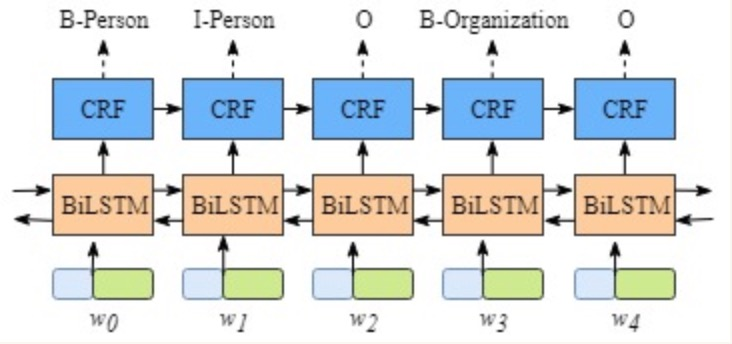
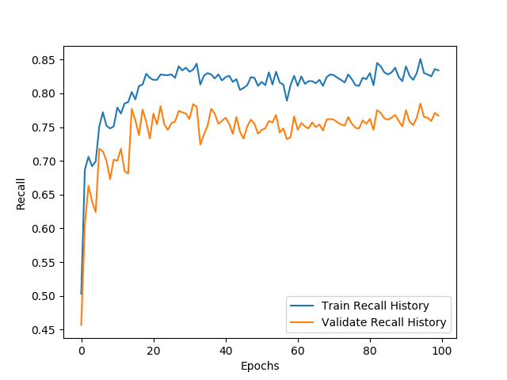

第六章:命名实体识别任务
6.1 序列标注¶
-
学习目标
-
知道序列标注问题主要任务
-
掌握条件随机场模型概念
-
能够使用条件随机场进行词性标注
-
序列标注问题
序列标注**指的是给定一个序列x=x_1x_2\cdots x_n，找出序列中每个元素对应标签y=y_1y_2\cdots y_n的问题。其中，y所有可能的取值集合称为**标注集。比如，前一小节中“更 高 地 举起 邓小平理论 的 伟大 旗帜”，对应的状态序列是“SSSBEBMMMESBEBE”，其中标注集是{B, M, S, E}。求解序列标注问题的模型一般称为**序列标注器**，通常由模型从一个标注数据集中学习相关知识后再进行预测。在NLP问题中，x通常是字符或词语，而y则是待预测的组词角色或词性等标签。中文分词、词性标注、命名实体识别都可以转化为序列标注问题。
- 序列标注与中文分词
考虑一个字符序列x，想象切词器真的是拿刀切割字符串，那么每个字符串在分词是无非由两种角色，要么在则个字符后面切开，要么跳过不切。这样，中文分词就转化为标注集为{切，过}序列标注问题。只要标注集正确标注每个字符切与不切，分词器就能够按照指示切割出正确的结果。可以将序列标注看作中文分词的中间结果，往后则是存粹的字符串分割。
当然分词标注集并非只有一种，前面介绍的{B, M, S, E}则是更常用的一种分词标注集。
- 序列标注与词性标注
词性标注任务是一个天然的序列标注问题：x是单词序列，y是相应的词性序列。例如：参观/动词 了/助词 北京/地名 天安门/地名。词性标注集同样不是唯一的，人们根据需要制定了不同的标注集。其中最著名的当数863标注集和北大标注集，前者词性数量要少一些，颗粒度要大一些。词性标注需要综合考虑前后的单词与词性才能决定当前单词的词性。比如副词容易接续动词，“的”字之后容易出现名词。这里的“容易”其实意味着较大的概率，需要使用概率模型去模拟。
- 序列标注与命名实体识别
所谓命名实体，指的是现实存在的实体，比如人名、地名和机构名。命名实体是OOV的主要组成部分，往往也是句子中最令人关注的成分。命名实体的数量是无穷的，因为世界上每种事物都需要一个名字代表自身。比如每颗星星、每种蛋白质都有自己的名称，宇宙中的星星和蛋白质显然不可数。 简短的人名和地名可以通过中文分词切分，然后通过词性标注来确定所属类别。但地名和机构名常常由多个单词组成（称为复合词），较难识別。例如，“联合国叙利亚问题独立国际调查委员会”。由于复合词的丰度较小，导致分词器和词性标注器很难一步到位地将其识别出来，这时常常在分词和词性标注的中间结果之上进行召回。 考虑到字符级别中文分词和词语级别命名实体识别有着类似的特点，都是组合短单位形成长单位的问题。所以命名实体识别可以复用 BMES 标注集，并沿用中文分词的逻辑，只不过标注的对象由字符变为单词而已。唯一不同的是，命名实体识别还需要确定实体所属的类别。这个额外的要求依然是个标注问题，可以通过将命名实体类别附着到 BMES 标签来达到目的。比如，构成地名的单词标注为“B/M/E/S一地名”，以此类推。对于那些不构成命名实体的单词，则统一标注为O（Outside ），即复合词之外。例如：参观/O 了/O 北京/B-地名 天安门/E-地名。命名实体识别模块根据标注结果，将“北京”和“天安门”作为首尾组合成词，并且标注为地名。
总之，序列标注问题是 NLP 中最常见的问题之一。许多应用任务都可以变换思路，转化为序列标注来解决。所以一个准确的序列标注模型非常重要，直接关系到 NLP 系统的准确率。
6.2 命名实体识别介绍¶
-
学习目标：
- 了解什么是命名实体识别
- 了解命名实体识别的作用
- 了解命名实体识别常用方法
- 了解医学文本特征
-
什么是命名实体识别：
- 命名实体识别(Named Entity Recognition，NER)就是从一段自然语言文本中找出相关实体，并标注出其位置以及类型。是信息提取，问答系统，句法分析，机器翻译等应用领域的重要基础工具，在自然语言处理技术走向实用化的过程中占有重要地位。包含行业，领域专有名词，如人名，地名，公司名，机构名，日期，时间，疾病名，症状名，手术名称，软件名称等。具体可参看如下示例图：


-
命名实体识别的作用：
- 识别专有名词，为文本结构化提供支持。
- 主体识别，辅助句法分析。
- 实体关系抽取，有利于知识推理。
-
命名实体识别常用方法：
基于规则：针对有特殊上下文的实体，或实体本身有很多特征的文本，使用规则的方法简单且有效。比如抽取文本中物品价格，如果文本中所有商品价格都是“数字+元”的形式，则可以通过正则表达式”\d*.?\d+元”进行抽取。但如果待抽取文本中价格的表达方式多种多样，例如“一千八百万”，“伍佰贰拾圆”，“2000万元”，遇到这些情况就要修改规则来满足所有可能的情况。随着语料数量的增加，面对的情况也越来越复杂，规则之间也可能发生冲突，整个系统也可能变得不可维护。因此基于规则的方式比较适合半结构化或比较规范的文本中的进行抽取任务，结合业务需求能够达到一定的效果。
- 优点：简单，快速。
- 缺点：适用性差，维护成本高后期甚至不能维护。
基于模型：从模型的角度来看，命名实体识别问题实际上是序列标注问题。序列标注问题指的是模型的输入是一个序列，包括文字，时间等，输出也是一个序列。针对输入序列的每一个单元，输出一个特定的标签。以中文分词任务进行举例，例如输入序列是一串文字："我是中国人", 输出序列是一串标签："OOBII", 其中"BIO"组成了一种中文分词的标签体系：B表示这个字是词的开始，I表示词的中间到结尾，O表示其他类型词。因此我们可以根据输出序列"OOBII"进行解码，得到分词结果"我\是\中国人"。
序列标注问题涵盖了自然语言处理中的很多任务，包括语音识别，中文分词，机器翻译，命名实体识别等，而常见的序列标注模型包括HMM, CRF, RNN, LSTM, GRU等模型。
其中在命名实体识别技术上，目前主流的技术是通过BiLSTM+CRF模型进行序列标注，也是项目中要用到的模型。
-
医学文本特征：

- 简短精炼
- 形容词相对较少
- 泛化性相对较小
- 医学名词错字率比较高
- 同义词、简称比较多
-
小节总结：
- 学习了什么是命名实体识别
- 学习了命名实体识别的作用
- 学习了命名实体识别常用方法
- 学习了医学文本特征
6.3 CRF介绍¶
- 学习目标：
- 了解CRF的概念和作用
- 了解转移概率矩阵
-
了解发射概率矩阵
-
CRF的概念和作用：
-
CRF(全称Conditional Random Fields), 条件随机场。是给定输入序列的条件下，求解输出序列的条件概率分布模型。
-
下面举两个应用场景的例子：
-
场景一：假设有一堆日常生活的给小朋友排拍的视频片段，可能的状态有睡觉、吃饭、喝水、洗澡、刷牙、玩耍等，大部分情况，我们是能够识别出视频片段的状态。但如果你只是看到一小段拿杯子的视频，在没有前后相连的视频作为前后文参照的情况下，我们很难知道拿杯子是要刷牙还是喝水。这时，可以用到CRF模型。
-
场景二：假设有分好词的句子，我们要判断每个词的词性，那么对于一些词来说，如果我们不知道相邻词的词性的情况下，是很难准确判断每个词的词性的。这时，我们也可以用到CRF.
-
-
基本定义：我们将随机变量的集合称为随机过程。由一个空间变量索引的随机过程，我们将其称为随机场。上面的例子中，做词性标注时，可以将{名词、动词、形容词、副词}这些词性定义为随机变量，然后从中选择相应的词性，而这组随机变量在某种程度上遵循某种概率分布，将这些词性按照对应的概率赋值给相应的词，就完成了句子的词性标注。
-
关于条件随机场与马尔科夫假设：
-
前面课程我们介绍过马尔科夫假设，也就是当前位置的取值只和与它相邻的位置的值有关，和它不相邻的位置的值无关。
- 应用到我们上面的词性标注例子中，可以理解为当前词的词性是根据前一个词和后一个词的词性来决定的，等效于从词性前后文的概率来给出当前词的词性判断结果。
-
现实中可以做如下假设：假设一个动词或者副词后面不会连接同样的动词或者副词，这样的概率很高。那么，可以假定这种给定隐藏状态(也就是词性序列)的情况下，来计算观测状态的计算过程。本质上CRF模型考虑到了观测状态这个先验条件，这也是条件随机场中的条件一词的含义。
-
转移概率矩阵：
- 首先假设我们需要标注的实体类型有一下几类：
{"O": 0, "B-dis": 1, "I-dis": 2, "B-sym": 3, "I-sym": 4}
# 其中dis表示疾病(disease), sym表示症状(symptom), B表示命名实体开头，I表示命名实体中间到结尾，O表示其他类型。
- 因此我们很容易知道每个字的可能标注类型有以上五种可能性，那么在一个句子中，由上一个字到下一个字的概率乘积就有5 × 5种可能性，具体见下图所示：
- 最终训练出来结果大致会如上图所示，其中下标索引为(i, j)的方格代表如果当前字符是第i行表示的标签，那么下一个字符表示第j列表示的标签所对应的概率值。以第二行为例，假设当前第i个字的标签为B-dis, 那么第i+1个字最大可能出现的概率应该是I-dis.
- 发射概率矩阵：
发射概率，是指已知当前标签的情况下，对应所出现字符的概率。通俗理解就是当前标签比较可能出现的文字有哪些，及其对应出现的概率。
下面是几段医疗文本数据的标注结果：

- 可以得到以上句子的转移矩阵概率如下：
- 对应的发射矩阵可以理解为如下图所示结果：

- 小节总结：
- 学习了CRF的概念和作用
- 概念：条件随机场，一种条件概率分布模型
- 作用：增加了先验条件，可以更好的完成实体序列的识别
- 学习了转移概率矩阵
- 学习了发射概率矩阵
6.4 BiLSTM介绍¶
-
学习目标：
- 了解BiLSTM网络结构。
- 掌握BiLSTM模型实现。
-
BiLSTM网络结构：
- 所谓的BiLSTM，就是(Bidirectional LSTM)双向LSTM. 单向的LSTM模型只能捕捉到从前向后传递的信息，而双向的网络可以同时捕捉正向信息和反向信息，使得对文本信息的利用更全面，效果也更好。
- 在BiLSTM网络最终的输出层后面增加了一个线性层，用来将BiLSTM产生的隐藏层输出结果投射到具有某种表达标签特征意义的区间，具体如下图所示：

-
BiLSTM模型实现：
- 第一步：实现类的初始化和网络结构的搭建。
- 第二步：实现网络的前向计算。
- 第三步：实现网络的预测函数。
-
第一步：实现类的初始化和网络结构的搭建。
# 本段代码构建类BiLSTM, 完成初始化和网络结构的搭建
# 总共3层：词嵌入层，双向LSTM层，全连接线性层
import torch
import torch.nn as nn
class BiLSTM(nn.Module):
def __init__(self, vocab_size, label_num):
super(BiLSTM, self).__init__()
# 用于将输入转换为词向量
self.embed = nn.Embedding(num_embeddings=vocab_size, embedding_dim=256)
# 用于提取输入的双向语义表示向量
self.blstm = nn.LSTM(input_size=256,
hidden_size=512,
bidirectional=True,
num_layers=1)
# 用于将 self.blstm 的输出向量映射为标签 logits
self.liner = nn.Linear(in_features=1024, out_features=label_num)
- 输入参数：
# 参数1:码表与id对照
char_to_id = {"双": 0, "肺": 1, "见": 2, "多": 3, "发": 4, "斑": 5, "片": 6,
"状": 7, "稍": 8, "高": 9, "密": 10, "度": 11, "影": 12, "。": 13}
# 参数2:标签码表对照
tag_to_id = {"O": 0, "B-dis": 1, "I-dis": 2, "B-sym": 3, "I-sym": 4}
# 参数：字向量维度
# EMBEDDING_DIM = 256
# 参数：隐层维度
# HIDDEN_DIM = 512
# 参数：堆叠 LSTM 层数
# NUM_LAYERS = 1
- 调用：
# 初始化模型
model = BiLSTM(vocab_size=len(char_to_id),
label_num=len(tag_to_id),)
print(model)
- 输出效果：
BiLSTM(
(embed): Embedding(14, 256)
(blstm): LSTM(256, 512, bidirectional=True)
(liner): Linear(in_features=1024, out_features=5, bias=True)
)
- 第二步：实现网络的前向计算。
# 参数：句子长度
# SENTENCE_LENGTH = 20
def forward(self, inputs, length):
# 将输入的 token 索引转换为词向量
outputs_embed = self.embed(inputs)
# 由于填充了很多0，此处将0进行压缩
outputs_packd = pack_padded_sequence(outputs_embed, length)
# BiLSTM 用于提取双向语义，提取每个句子中的 token 表示
outputs_blstm, (hn, cn) = self.blstm(outputs_packd)
# outputs_paded 表示填充后的 BiLSTM 对每个 token 的输出
# outputs_length 表示每个句子实际的长度
outputs_paded, output_lengths = pad_packed_sequence(outputs_blstm)
outputs_paded = outputs_paded.transpose(0, 1)
# 线性层计算，计算出发射矩阵，形状：(16, 57, 7)
output_logits = self.liner(outputs_paded)
outputs = []
for output_logit, outputs_length in zip(output_logits, output_lengths):
outputs.append(output_logit[:outputs_length])
return outputs
- 第三步：实现网络的预测函数。
def predict(self, inputs):
# 将输入的 token 索引转换为词向量
outputs_embed = self.embed(inputs)
# 增加一个 batch 维度在 1 位置
outputs_embed = outputs_embed.unsqueeze(1)
# 对每个 Token 进行语义表示
outputs_blstm, (hn, cn) = self.blstm(outputs_embed)
# 把 1 位置的 batch 值去掉
outputs_blstm = outputs_blstm.squeeze(1)
# 计算每个 Token 的发射分数
output_liner = self.liner(outputs_blstm)
return output_liner
-
代码实现位置：/data/doctor_offline/ner_model/bilstm_crf.py
-
小节总结：
- 了解了BiLSTM网络结构
- 设置隐藏层维度的时候，需要将hidden_size // 2
- 总共有3层需要构建，分别是词嵌入层，双向LSTM层，全连接线性层
- 在代码层面，双向LSTM就是将nn.LSTM()中的参数bidirectional设置为True
- 掌握了BiLSTM网络的代码实现
- 构建类BiLSTM的初始化函数
- 添加文本向量化的辅助函数，注意padding填充为相同长度的Tensor
- 要注意forward函数中不同张量的形状约定
- 了解了BiLSTM网络结构
6.5 BiLSTM+CRF模型¶
-
学习目标：
- 掌握BiLSTM+CRF模型结构
- 掌握损失函数的定义
- 掌握BiLSTM_CRF模型的代码实现
-
BiLSTM+CRF模型结构：
- 1, 模型的标签定义与整体架构
- 2, 模型内部的分层展开
- 3, CRF层的作用
- 1, 模型的标签定义与整体架构：假设我们的数据集中有两类实体-人名，地名，与之对应的在训练集中有5类标签如下所示：
B-Person, I-Person, B-Organization, I-Organization, O
# B-Person: 人名的开始
# I-Person: 人名的中间部分
# B-Organization: 地名的开始
# I-Organization: 地名的中间部分
# O: 其他非人名，非地名的标签
假设一个句子有5个单词构成，(w0, w1, w2, w3, w4), 每一个单元都代表着由字嵌入构成的向量。 其中字嵌入是随机初始化的，词嵌入是通过数据训练得到的，所有的嵌入在训练过程中都会调整到最优解。
这些字嵌入或词嵌入作为BiLSTM+CRF模型的输入，而输出的是句子中每个单元的标签。

- 2, 模型内部的分层展开：整个模型明显有两层，第一层是BiLSTM层，第二层是CRF层，将层的内部展开如下图所示：

- BiLSTM层的输出为每一个标签的预测分值，例如对于单词w0, BiLSTM层输出是
1.5 (B-Person), 0.9 (I-Person), 0.1 (B-Organization), 0.08 (I-Organization), 0.05 (O)
这些分值将作为CRF层的输入。
3, CRF层的作用：如果没有CRF层，也可以训练一个BiLSTM命名实体识别模型，如下图所示：

由于BiLSTM的输出为单元的每一个标签分值，我们可以挑选分值最高的一个作为该单元的标签。例如，对于单词w0, "B-Person"的分值-1.5是所有标签得分中最高的，因此可以挑选"B-Person"作为单词w0的预测标签。同理，可以得到w1 - "I-Person", w2 - "O", w3 - "B-Organization", w4 - "O"
虽然按照上述方法，在没有CRF层的条件下我们也可以得到x中每个单元的预测标签，但是不能保证标签的预测每次都是正确的。如果出现下图的BiLSTM层输出结果，则明显预测是错误的。

CRF层能从训练数据中获得约束性的规则。
CRF层可以为最后预测的标签添加一些约束来保证预测的标签是合法的。在训练数据训练的过程中，这些约束可以通过CRF层自动学习到。
1: 句子中的第一个词总是以标签"B-"或者"O"开始，而不是"I-"开始。
2: 标签"B-label1 I-label2 I-label3 ......", 其中的label1, label2, label3应该属于同一类实体。
比如，"B-Person I-Person"是合法的序列，但是"B-Person I-Organization"是非法的序列。
3: 标签序列"O I-label"是非法序列，任意实体标签的首个标签应该是"B-", 而不是"I-".
比如，"O B-label"才是合法的序列
- 有了上述这些约束，标签序列的预测中非法序列出现的概率将会大大降低。
-
损失函数的定义：
-
BiLSTM层的输出维度是tag_size, 也就是每个单词w_i映射到tag的发射概率值，假设BiLSTM的输出矩阵是P, 其中P(i,j)代表单词w_i映射到tag_j的非归一化概率。对于CRF层，假设存在一个转移矩阵A, 其中A(i,j)代表tag_j转移到tag_i的概率。
-
对于输入序列X对应的输出tag序列y, 定义分数如下(本质上就是发射概率和转移概率的累加和):
-
S(X,y)=\sum_{i=0}^{n}A_{y_i,y_{i+1}}+\sum_{i=1}^nP_{i,y_i}
-
利用softmax函数，为每一个正确的tag序列y定义一个概率值，在真实的训练中，只需要最大化似然概率p(y|X)即可，具体使用对数似然如下：
-
-\log(p(y|X)) = -\log(\frac{e^{S(X,y)}}{\sum_{\hat{y}\in Y_X } e^{S(X,\hat{y})}})\\ = \log(\sum_{\hat{y}\in Y_X} e^{S(X, \hat{y})})-S(X, y)
-
-
BiLSTM+CRF模型的实现：
- 第一步：构建CRF模型
- 第二步：计算单条路径的分数
- 第三步：计算全部路径的分数
- 第四步：计算损失值
- 第五步：维特比算法的实现
- 第六步：构造NER模型组合全部功能
-
第一步：构建CRF模型
# 导入相关包与模块
import torch
import torch.nn as nn
from torch.nn.utils.rnn import pack_padded_sequence
from torch.nn.utils.rnn import pad_packed_sequence
# 定义计算设备
device = torch.device('cuda' if torch.cuda.is_available() else 'cpu')
class CRF(nn.Module):
def __init__(self, label_num):
super(CRF, self).__init__()
# 转移矩阵的标签数量
self.label_num = label_num
# [TAG1, TAG2, TAG3...STAR, END]
params = torch.randn(self.label_num + 2, self.label_num + 2)
self.transition_scores = nn.Parameter(params)
# 开始和结束标签
START_TAG, ENG_TAG = self.label_num, self.label_num + 1
self.transition_scores.data[:, START_TAG] = -1000
self.transition_scores.data[ENG_TAG, :] = -1000
# 定义一个较小值用于扩展发射和转移矩阵时填充
self.fill_value = -1000.0
-
代码实现位置：/data/doctor_offline/ner_model/bilstm_crf.py
-
第二步：计算单条路径的分数
def _get_real_path_score(self, emission_score, sequence_label):
# 计算标签的数量
seq_length = len(sequence_label)
# 计算真实路径发射分数
real_emission_score = torch.sum(emission_score[list(range(seq_length)), sequence_label])
# 在真实标签序列前后增加一个 start 和 end
b_id = torch.tensor([self.label_num], dtype=torch.int32, device=device)
e_id = torch.tensor([self.label_num + 1], dtype=torch.int32, device=device)
sequence_label_expand = torch.cat([b_id, sequence_label, e_id])
# 计算真实路径转移分数
pre_tag = sequence_label_expand[list(range(seq_length + 1))]
now_tag = sequence_label_expand[list(range(1, seq_length + 2))]
real_transition_score = torch.sum(self.transition_scores[pre_tag, now_tag])
# 计算真实路径分数
real_path_score = real_emission_score + real_transition_score
return real_path_score
-
代码实现位置：/data/doctor_offline/ner_model/bilstm_crf.py
-
第三步：计算全部路径的分数
def _log_sum_exp(self, score):
# 计算 e 的指数时，每个元素都减去最大值，避免数值溢出
max_score, _ = torch.max(score, dim=0)
max_score_expand = max_score.expand(score.shape)
return max_score + torch.log(torch.sum(torch.exp(score - max_score_expand), dim=0))
def _expand_emission_matrix(self, emission_score):
# 计算标签的数量
sequence_length = emission_score.shape[0]
# 扩展时会增加 START 和 END 标签，定义该标签的值
b_s = torch.tensor([[self.fill_value] * self.label_num + [0, self.fill_value]], device=device)
e_s = torch.tensor([[self.fill_value] * self.label_num + [self.fill_value, 0]], device=device)
# 扩展发射矩阵为 (self.label_num + 2, self.label_num + 2)
expand_matrix = self.fill_value * torch.ones([sequence_length, 2], dtype=torch.float32, device=device)
emission_score_expand = torch.cat([emission_score, expand_matrix], dim=1)
emission_score_expand = torch.cat([b_s, emission_score_expand, e_s], dim=0)
return emission_score_expand
def _get_total_path_score(self, emission_score):
# 扩展发射分数矩阵
emission_score_expand = self._expand_emission_matrix(emission_score)
# 计算所有路径分数
pre = emission_score_expand[0]
for obs in emission_score_expand[1:]:
# 扩展 pre 维度
pre_expand = pre.reshape(-1, 1).expand([self.label_num + 2, self.label_num + 2])
# 扩展 obs 维度
obs_expand = obs.expand([self.label_num + 2, self.label_num + 2])
# 扩展之后 obs pre 和 self.transition_scores 维度相同
score = obs_expand + pre_expand + self.transition_scores
# 计算对数分数
pre = self._log_sum_exp(score)
return self._log_sum_exp(pre)
-
代码实现位置：/data/doctor_offline/ner_model/bilstm_crf.py
-
第四步：计算损失值
def forward(self, emission_scores, sequence_labels):
total_loss = 0.0
for emission_score, sequence_label in zip(emission_scores, sequence_labels):
# 计算真实路径得分
real_path_score = self._get_real_path_score(emission_score, sequence_label)
# 计算所有路径分数
total_path_score = self._get_total_path_score(emission_score)
# 最终损失
finish_loss = total_path_score - real_path_score
# 累加不同句子的损失
total_loss += finish_loss
return total_loss
-
代码实现位置：/data/doctor_offline/ner_model/bilstm_crf.py
-
第五步：维特比算法的实现
def predict(self, emission_score):
"""使用维特比算法，结合发射矩阵+转移矩阵计算最优路径"""
# 扩展发射分数矩阵
emission_score_expand = self._expand_emission_matrix(emission_score)
# 计算分数
ids = torch.zeros(1, self.label_num + 2, dtype=torch.long, device=device)
val = torch.zeros(1, self.label_num + 2, device=device)
pre = emission_score_expand[0]
for obs in emission_score_expand[1:]:
# 扩展 pre 维度
pre_expand = pre.reshape(-1, 1).expand([self.label_num + 2, self.label_num + 2])
# 扩展 obs 维度
obs_expand = obs.expand([self.label_num + 2, self.label_num + 2])
# 扩展之后 obs pre 和 self.transition_scores 维度相同
score = obs_expand + pre_expand + self.transition_scores
# 获得当前多分支中最大值的分支索引
value, index = score.max(dim=0)
# 拼接每一个时间步的结果
ids = torch.cat([ids, index.unsqueeze(0)], dim=0)
val = torch.cat([val, value.unsqueeze(0)], dim=0)
# 计算分数
pre = value
# 先取出最后一个的最大值
index = torch.argmax(val[-1])
best_path = [index]
# 再回溯前一个最大值
# 由于为了方便拼接，我们在第一个位置默认填充了0
for i in reversed(ids[1:]):
# 获得分数最大的索引
# index = torch.argmax(v)
# 获得索引对应的标签ID
index = i[index].item()
best_path.append(index)
best_path = best_path[::-1][1:-1]
return best_path
-
代码实现位置/data/doctor_offline/ner_model/bilstm_crf.py
-
第六步：构造NER模型组合全部功能
class NER(nn.Module):
def __init__(self, vocab_size, label_num):
super(NER, self).__init__()
self.vocab_size = vocab_size
self.label_num = label_num
# 双向长短记忆网络
self.bilstm = BiLSTM(vocab_size=self.vocab_size, label_num=self.label_num)
# 条件随机场网络层
self.crf = CRF(label_num=self.label_num)
def forward(self, inputs, labels, length):
# 计算输入批次样本的每个 Token 的分数，即：每个句子的发射矩阵
emission_scores = self.bilstm(inputs, length)
# 计算批次样本的总损失
batch_loss = self.crf(emission_scores, labels)
# 返回总损失
return batch_loss
def save_model(self, save_apth):
save_info = {
'init': {'vocab_size': self.vocab_size, 'label_num': self.label_num},
'state': self.state_dict()
}
torch.save(save_info, save_apth)
def predict(self, inputs):
# 计算输入批次样本的每个 Token 的分数，即：每个句子的发射矩阵
emission_scores = self.bilstm.predict(inputs)
# viterbi_decode 函数接收的发射矩阵为二维的 (seq_len, scores)
logits = self.crf.predict(emission_scores)
return logits
- 代码实现位置：/data/doctor_offline/ner_model/bilstm_crf.py
6.6 模型训练¶
-
学习目标：
- 掌握数据的预处理流程
- 掌握生成批量训练数据的方法
- 掌握模型训练代码
-
模型训练的流程
- 第一步：熟悉字符到数字编码的码表
- 第二步：熟悉训练数据集的样式和含义解释
- 第三步：生成批量训练数据
- 第四步：完成训练模型的代码。
- 第五步：完成准确率和召回率的评估代码
- 第六步：绘制损失曲线和评估曲线图
第一步：熟悉字符到数字编码的码表。
# 代表了数据集中所有字符到数字编码的字典映射
# 码表可以包含中文简体、繁体、英文大小写字母、数字、中英文标点符号等等
# <PAD>为填充标识，训练时需要将句子转化成矩阵，而句子长短不一，需要做padding处理
{
"<PAD>": 0,
"厑": 1,
"吖": 2,
"呵": 3,
"啊": 4,
"嗄": 5,
"嬶": 6,
...
}
- 码表所在位置：/data/doctor_offline/ner_model/data/char_to_id.json
# 这里不使用码表原始编码，后续使用BertTokenizer进行编码
def build_vocab():
chat_to_id = json.load(open('data/char_to_id.json', mode='r', encoding='utf8'))
unique_words = list(chat_to_id.keys())[1:-1]
unique_words.insert(0, '[UNK]')
unique_words.insert(0, '[PAD]')
# 将字写入到 data/bilstm_crf_vocab_aidoc.txt 词典文件中
with open('data/bilstm_crf_vocab_aidoc.txt', 'w') as file:
for word in unique_words:
file.write(word + '\n')
- 代码实现位置：/data/doctor_offline/ner_model/build_vocab.py
第二步：熟悉训练数据集的样式和含义解释。
{"text": ["女", "性", "，", "8", "8", "岁", "，", "农", "民", "，", "双", "滦", "区", "应", "营", "子", "村", "人", "，", "主", "因", "右", "髋", "部", "摔", "伤", "后", "疼", "痛", "肿", "胀", "，", "活", "动", "受", "限", "5", "小", "时", "于", "2", "0", "1", "6", "-", "1", "0", "-", "2", "9", "；", "1", "1", "：", "1", "2", "入", "院", "。"], "label": ["O", "O", "O", "O", "O", "O", "O", "O", "O", "O", "O", "O", "O", "O", "O", "O", "O", "O", "O", "O", "O", "O", "O", "O", "O", "O", "O", "B-sym", "I-sym", "B-sym", "I-sym", "O", "O", "O", "O", "O", "O", "O", "O", "O", "O", "O", "O", "O", "O", "O", "O", "O", "O", "O", "O", "O", "O", "O", "O", "O", "O", "O", "O"]}
-
训练数据集的含义解释：
- 每一行包含一个字以及与之对应的标签
- json格式
- 标签说明：
- B-dis: 疾病实体名词起始标识
- I-dis: 疾病实体名词中间到结尾标识
- B-sym: 症状实体名词起始标识
- I-sym: 症状实体名词中间到结尾标识
- O: 其他非实体部分标识
-
数据集所在位置：/data/doctor_offline/ner_model/data/train.txt /data/doctor_offline/ner_model/data/valid.txt
-
将训练数据集转换为csv格式：
import pandas as pd
import json
def load_corpus():
# 定义训练数据集和验证数据集的路径
train_data_file_path = 'ai_doc_data/train.txt'
validate_file_path = 'ai_doc_data/validate.txt'
data_inputs, data_labels = [], []
# 因为每行都是一个样本，所以按行遍历即可
for line in open(train_data_file_path, mode='r', encoding='utf8'):
# 每行样本数据都是json字符串，可以直接进行loads, 然后追加进结果列表中
data = json.loads(line)
# print(type(data))
data_inputs.append(' '.join(data['text']))
data_labels.append(' '.join(data['label']))
train_data_df = pd.DataFrame()
train_data_df['data_inputs'] = data_inputs
train_data_df['data_labels'] = data_labels
train_data_df.to_csv('data/01-训练集_aidoc.csv')
print('训练集数据量：', len(train_data_df))
data_inputs, data_labels = [], []
for line in open(validate_file_path, mode='r', encoding='utf8'):
data = json.loads(line)
data_inputs.append(' '.join(data['text']))
data_labels.append(' '.join(data['label']))
# 存储测试集数据
test_data_df = pd.DataFrame()
test_data_df['data_inputs'] = data_inputs
test_data_df['data_labels'] = data_labels
test_data_df.to_csv('data/02-测试集_aidoc.csv')
print('测试集数据量：', len(test_data_df))
- 代码实现位置：/data/doctor_offline/ner_model/load_corpus.py
第三步：再将csv文件转成DatasetDict格式，生成批量训练数据。
import pandas as pd
from datasets import Dataset, DatasetDict
def encode_label():
label_to_index = {"O": 0, "B-dis": 1, "I-dis": 2, "B-sym": 3, "I-sym": 4}
# 将 csv 数据转换成 Dataset 类型
train_data = pd.read_csv('data/01-训练集_aidoc.csv')
valid_data = pd.read_csv('data/02-测试集_aidoc.csv')
train_data = Dataset.from_pandas(train_data)
valid_data = Dataset.from_pandas(valid_data)
corpus_data = DatasetDict({'train': train_data, 'valid': valid_data})
# 将标签数据转换为索引表示
def data_handler(data_labels, data_inputs):
data_label_ids = []
for labels in data_labels:
label_ids = []
for label in labels.split():
label_ids.append(label_to_index[label])
data_label_ids.append(label_ids)
return {'data_labels': data_label_ids, 'data_inputs': data_inputs}
corpus_data = corpus_data.map(data_handler, input_columns=['data_labels', 'data_inputs'], batched=True)
# 数据存储
corpus_data.save_to_disk('data/bilstm_crf_data_aidoc')
- 代码实现位置：/data/doctor_offline/ner_model/encode_label.py
- 生成了新的数据集文件：/data/doctor_offline/ner_model/data/bilstm_crf_data_aidoc
第四步：完成训练模型的代码。
import torch
import torch.optim as optim
import numpy as np
import pandas as pd
from torch.nn.utils.rnn import pad_sequence
from datasets import load_from_disk
from transformers import BertTokenizer
import matplotlib.pyplot as plt
from bilstm_crf import NER
from evaluate import evaluate
device = torch.device("cuda:0" if torch.cuda.is_available() else "cpu")
def pad_batch_inputs(data, labels, tokenizer):
# 函数需要返回一个按照内容长度从大到小排序过的，sentence 和 label, 还要返回 sentence 长度
# 将批次数据的输入和标签值分开，并计算批次的输入长度
data_inputs, data_length, data_labels = [], [], []
for data_input, data_label in zip(data, labels):
# 对输入句子进行编码
data_input_encode = tokenizer.encode(data_input,
return_tensors='pt',
add_special_tokens=False)
data_input_encode = data_input_encode.to(device)
data_inputs.append(data_input_encode.squeeze())
# 去除多余空格，计算句子长度
data_input = ''.join(data_input.split())
data_length.append(len(data_input))
# 将标签转换为张量
data_labels.append(torch.tensor(data_label, device=device))
# 对一个批次的内容按照长度从大到小排序，符号表示降序
sorted_index = np.argsort(-np.asarray(data_length))
# 根据长度的索引进行排序
sorted_inputs, sorted_labels, sorted_length = [], [], []
for index in sorted_index:
sorted_inputs.append(data_inputs[index])
sorted_labels.append(data_labels[index])
sorted_length.append(data_length[index])
# 对张量进行填充，使其变成长度一样的张量
pad_inputs = pad_sequence(sorted_inputs)
return pad_inputs, sorted_labels, sorted_length
label_to_index = {"O": 0, "B-dis": 1, "I-dis": 2, "B-sym": 3, "I-sym": 4}
def train():
# 读取数据集
train_data = load_from_disk('data/bilstm_crf_data_aidoc')['train']
# 构建分词器
tokenizer = BertTokenizer(vocab_file='data/bilstm_crf_vocab_aidoc.txt')
# 构建模型
model = NER(vocab_size=tokenizer.vocab_size, label_num=len(label_to_index)).cuda(device)
# model_param = torch.load('data/BiLSTM-CRF-final.bin')
# model = NER(**model_param['init']).cuda(device)
# model.load_state_dict(model_param['state'])
# 批次大小
batch_size = 16
# 优化器
optimizer = optim.AdamW(model.parameters(), lr=3e-5)
# 训练轮数
num_epoch = 700
# train history
train_history_list = []
# valid history
valid_history_list = []
# 开始训练
def start_train(data_inputs, data_labels, tokenizer):
# 对批量数据进行填充对齐
pad_inputs, sorted_labels, sorted_length = \
pad_batch_inputs(data_inputs, data_labels, tokenizer)
# 计算损失
loss = model(pad_inputs, sorted_labels, sorted_length)
# 梯度清零
optimizer.zero_grad()
# 反向传播
loss.backward()
# 参数更新
optimizer.step()
# 统计损失
nonlocal total_loss
total_loss += loss.item()
for epoch in range(0, num_epoch):
# 统计损失
total_loss = 0.0
# 开始训练
train_data.map(start_train,
input_columns=['data_inputs', 'data_labels'],
batched=True,
batch_size=batch_size,
fn_kwargs={'tokenizer': tokenizer},
desc='epoch: %d' % (epoch + 1))
# 打印损失
print('epoch: %d loss: %.3f' % (epoch + 1, total_loss))
# evaluate train data
# train_eval_result = evaluate(model, tokenizer, train_data)
# train_eval_result.append(total_loss)
# train_history_list.append(train_eval_result)
# evaluate valid data
# valid_history_list.append(evaluate(model, tokenizer))
# 存储模型
if (epoch+1) % 10 == 0:
model.save_model('data/BiLSTM-CRF-%d.bin' % (epoch + 1))
# plot history curve
# save_train_history_image(train_history_list, valid_history_list, "log/bilstm_crf_train_plot.png")
if __name__ == '__main__':
train()
- 代码实现位置：/data/doctor_offline/ner_model/train.py
第五步：完成准确率和召回率的评估代码。
import torch
from datasets import load_from_disk
from transformers import BertTokenizer
from bilstm_crf import NER
device = torch.device("cuda:0" if torch.cuda.is_available() else "cpu")
def evaluate(model=None, tokenizer=None, data=None):
if data is None:
# 读取测试数据
data = load_from_disk('data/bilstm_crf_data_aidoc')['valid']
# 1. 计算各个不同类别总实体数量
# 计算测试集实体数量
total_entities = {'DIS': [], 'SYM': []}
# indicators
indicators = []
def calculate_handler(data_inputs, data_labels):
# 将 data_inputs 转换为没有空格隔开的句子
data_inputs = ''.join(data_inputs.split())
# 提取句子中的实体
extract_entities = extract_decode(data_labels, data_inputs)
# 统计每种实体的数量
nonlocal total_entities
for key, value in extract_entities.items():
total_entities[key].extend(value)
# 统计不同实体的数量
data.map(calculate_handler, input_columns=['data_inputs', 'data_labels'])
# print(total_entities)
# 2. 计算模型预测的各个类别实体数量
if model is None:
model_param = torch.load('data/BiLSTM-CRF-final.bin')
model = NER(**model_param['init']).cuda(device)
model.load_state_dict(model_param['state'])
# 构建分词器
if tokenizer is None:
tokenizer = BertTokenizer(vocab_file='data/bilstm_crf_vocab_aidoc.txt')
model_entities = {'DIS': [], 'SYM': [], }
def start_evaluate(data_inputs):
# 对输入文本进行分词
model_inputs = tokenizer.encode(data_inputs, add_special_tokens=False, return_tensors='pt')[0]
model_inputs = model_inputs.to(device)
# 文本送入模型进行计算
with torch.no_grad():
label_list = model.predict(model_inputs)
# 统计预测的实体数量
text = ''.join(data_inputs.split())
# 从预测结果提取实体名字
extract_entities = extract_decode(label_list, text)
nonlocal model_entities
for key, value in extract_entities.items():
model_entities[key].extend(value)
# 统计预测不同实体的数量
data.map(start_evaluate, input_columns=['data_inputs'], batched=False)
# print(model_entities)
# 3. 统计每个类别的召回率
total_pred_correct = 0
total_true_correct = 0
for key in total_entities.keys():
# 获得当前 key 类别真实和模型预测实体列表
true_entities = total_entities[key]
true_entities_num = len(true_entities)
pred_entities = model_entities[key]
pred_entities_num = len(pred_entities)
# 分解预测实体中，pred_correct 表示预测正确，pred_incorrect 表示预测错误
pred_correct, pred_incorrect = 0, 0
for pred_entity in pred_entities:
if pred_entity in true_entities:
pred_correct += 1
continue
pred_incorrect += 1
# 计算共预测正确多少个实体
total_pred_correct += pred_correct
# 计算共有多少个真实的实体
total_true_correct += true_entities_num
# 计算精度
# 精确率：预测结果为正例样本中真实为正例的比例
# 召回率：真实为正例的样本中预测结果为正例的比例
recall = pred_correct / true_entities_num
precision = pred_correct / pred_entities_num
f1 = 0
if recall != 0 or precision != 0:
f1 = 2 * precision * recall / (precision + recall)
print(key, '查全率：%.3f' % recall)
print(key, '查准率：%.3f' % precision)
print(key, 'f1: %.3f' % f1)
print('-' * 50)
indicators.extend([recall, precision, f1])
print('准确率：%.3f' % (total_pred_correct / total_true_correct))
indicators.append(total_pred_correct / total_true_correct)
return indicators
def extract_decode(label_list, text):
"""
:param label_list: 模型输出的包含标签序列的一维列表
:param text: 模型输入的句子
:return: 提取到的实体名字
"""
label_to_index = {"O": 0, "B-dis": 1, "I-dis": 2, "B-sym": 3, "I-sym": 4}
B_DIS, I_DIS = label_to_index['B-dis'], label_to_index['I-dis']
B_SYM, I_SYM = label_to_index['B-sym'], label_to_index['I-sym']
# 提取连续的标签代表的实体
def extract_word(start_index, next_label):
# index 表示最后索引的位置
index, entity = start_index + 1, [text[start_index]]
for index in range(start_index + 1, len(label_list)):
if label_list[index] != next_label:
break
entity.append(text[index])
return index, ''.join(entity)
# 存储提取的命名实体
extract_entites, index = {'DIS': [], 'SYM': []}, 0
# 映射下一个持续的标签
next_label = {B_DIS: I_DIS, B_SYM: I_SYM}
# 映射词的所属类别
word_class = {B_DIS: 'DIS', B_SYM: 'SYM'}
while index < len(label_list):
# 获得当前位置的标签
label = label_list[index]
if label in next_label.keys():
# 将当前位置和对应的下一个持续标签传递到 extract_word 函数
index, word = extract_word(index, next_label[label])
extract_entites[word_class[label]].append(word)
continue
index += 1
return extract_entites
if __name__ == '__main__':
evaluate()
- 代码实现位置：/data/doctor_offline/ner_model/evaluate.py
第六步：绘制损失曲线和评估曲线图
- 训练和验证准确率对照曲线：
- 分析：
- 首先，准确率是指识别**正确的实体**占**识别出的实体**中的比例。
- 根据对照曲线来看，整体学习结果都在趋于准确率上升方向增加，而且随着批次的增加曲线震动相对平稳，不过可能由于训练与验证样本分布不均衡或者噪声等原因，导致最终验证集的准确度没有达到与训练集相同的情况。
- 最终的训练集和验证集的召回率分别在：0.85和0.78左右。
- 训练和验证召回率对照曲线：

- 分析：
- 在此召回率是指**识别正确的实体**占当前批次所包含的**所有实体总数**的比例。
- 关于训练和验证召回率对照曲线，可以看出召回率的变化相对比较平滑，基本上也在40步左右趋于稳定。
- 最终的训练集和验证集的召回率分别在：0.83和0.75左右。
- 训练和验证F1值对照曲线：

- 分析：
- F1值主要是指训练效果而言，在不多识别实体的情况下同时提高准确度的衡量指标。
- 其公式为：2×准确率×召回率 / (准确率**+**召回率)
- 从曲线可见整体F1值上升与损失、召回率的曲线比较接近，说明在识别出的实体中，正确率比较问题，不过根据前面的准确度来分析，可能在识别过程中，增加了识别出的实体个数而导致不稳定。从这方面来说，可以验证样本不均衡问题以及噪声对模型的影响还是比较大的。
- 从整体而言，F1值基本也在第40步之后趋于稳定，最终的训练集和验证集的结果在：0.85和0.75左右。
- 小节总结：
- 学习了数据预处理的相关方法
- 学习生成批量训练数据的方法
- 学习了模型训练相关代码的实现
- 精确率和召回率评估的代码
- 模型构建类的全部内部函数代码
- 启动训练流程的代码
6.7 模型使用¶
-
学习目标：
- 实体抽取
-
实体抽取
import torch
from transformers import BertTokenizer
from bilstm_crf import NER
from evaluate import extract_decode
from tqdm import tqdm
import os
device = torch.device("cuda:0" if torch.cuda.is_available() else "cpu")
def entity_extract(text):
# 构建分词器
tokenizer = BertTokenizer(vocab_file='data/bilstm_crf_vocab_aidoc.txt')
# 初始化模型
model_param = torch.load('data/BiLSTM-CRF-final.bin')
model = NER(**model_param['init']).cuda(device)
model.load_state_dict(model_param['state'])
# 我们先按字将其分开，并在字之间添加空格，便于 Bert 分词器能够准确按字分割
input_text = ' '.join(list(text))
model_inputs = tokenizer.encode(input_text, add_special_tokens=False, return_tensors='pt')[0]
model_inputs = model_inputs.to(device)
with torch.no_grad():
outputs = model.predict(model_inputs)
return extract_decode(outputs, ''.join(input_text.split()))
def batch_entity_extract(data_path):
for fn in tqdm(os.listdir(data_path)):
# 拼装全路径
fullpath = os.path.join(data_path, fn)
# 定义输出结果文件
entities_file = open(os.path.join(prediction_result_path, fn.replace('txt', 'csv')), mode='w', encoding='utf8')
with open(fullpath, mode='r', encoding='utf8') as f:
# 读取文件内容
text = f.readline()
# 调用单个预测模型，输出为目标劳累型实体文本列表
entities = entity_extract(text)
print(entities)
# 写入识别结果文件
entities_file.write("\n".join(entities['SYM']))
print('batch_predict Finished'.center(100, '-'))
if __name__ == '__main__':
batch_entity_extract('data/unstructured/norecognite')
# text = "本病是由DNA病毒的单纯疱疹病毒所致。人类单纯疱疹病毒分为两型，" \
# "即单纯疱疹病毒Ⅰ型（HSV-Ⅰ）和单纯疱疹病毒Ⅱ型（HSV-Ⅱ）。" \
# "Ⅰ型主要引起生殖器以外的皮肤黏膜（口腔黏膜）和器官（脑）的感染。" \
# "Ⅱ型主要引起生殖器部位皮肤黏膜感染。" \
# "病毒经呼吸道、口腔、生殖器黏膜以及破损皮肤进入体内，" \
# "潜居于人体正常黏膜、血液、唾液及感觉神经节细胞内。" \
# "当机体抵抗力下降时，如发热胃肠功能紊乱、月经、疲劳等时，" \
# "体内潜伏的HSV被激活而发病。"
# result = entity_extract(text)
# print(result)
-
代码实现位置：/data/doctor_offline/ner_model/entity_extract.py
-
输出效果：将识别结果保存至prediction_result_path指定的目录下，名称与源文件一致，内容为每行存储识别实体名称